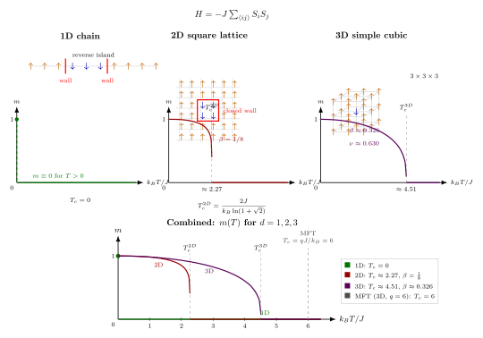

Ising 模型: 一维精确, 二维 Onsager, 三维 RG
第 14 节把重整化群的抽象机器架起来了: 粗化、重标度、流向不动点, 临界指数是不动点附近线性化算子的本征值. 这套语言漂亮, 但抽象得让人发虚. 本节把它按在一个具体的格子模型上. 这个模型简单到一句话就能讲完: 每个格点放一个只能取 $+1$ 或 $-1$ 的"小磁针" $S_i$, 相邻两个自旋倾向于同向 (能量低), 外加一个可选的外磁场 $h$ 偏置每个自旋. 哈密顿量就一行:
$$H = -J \sum_{\langle ij\rangle} S_i S_j - h\sum_i S_i, \qquad S_i = \pm 1.\tag{1}$$
$\langle ij\rangle$ 跑遍最近邻对, $J\gt 0$ 是铁磁耦合. 写下这一行的是 1920 年代 Hamburg 的研究生 Ernst Ising, 他的导师 Wilhelm Lenz 让他在博士论文里算算这个玩具模型能不能在一维给出铁磁相变. 1925 年他交出的答案是: 不能. 论文短短四页, 结论令人沮丧, Ising 据此认为这个模型没什么用, 转行去教中学了. 事后证明他只是运气不好: 一维是三个维度里最平凡的那一个.
问题因此很自然地分成三档. 一维能解析解, 答案是"没有相变". 二维能解析解 (Onsager 1944, 一个当时几乎没人读得懂的壮举), 答案是有相变, 且磁化指数 $\beta = 1/8$, 比热对数发散. 三维解析求解至今没人做到, 但 Monte Carlo 加重整化群给出了几位有效数字的临界温度和临界指数. 三档之间的分岔不是技术的问题, 而是原则的问题: 维度本身决定了涨落能不能摧毁秩序.
一、一维: 转移矩阵法与"没有相变"
先把一维解一遍, 作为本节的参照基线. 一维链上 $N$ 个自旋, 周期边界 $S_{N+1} = S_1$. 为了方便暂且打开一个小磁场 $h$:
$$H = -J\sum_{i=1}^N S_i S_{i+1} - \frac{h}{2}\sum_{i=1}^N (S_i + S_{i+1}).$$
第二项把 $h\sum_i S_i$ 对称地摊到相邻对上, 这样总能量可以写成 $H = \sum_i E(S_i, S_{i+1})$, 每一项只依赖相邻两格. 于是配分函数 $Z = \sum_{\{S_i\}} e^{-\beta H}$ 可以写成矩阵乘积:
$$Z = \sum_{\{S_i\}} \prod_i T_{S_i, S_{i+1}}, \qquad T_{ss'} = \exp\!\left[\beta J ss' + \tfrac{\beta h}{2}(s + s')\right].$$
$T$ 是一个 $2\times 2$ 矩阵, 带周期边界后 $Z = \mathrm{Tr}\,T^N = \lambda_+^N + \lambda_-^N$, 其中 $\lambda_\pm$ 是 $T$ 的两个本征值. 算出来
$$\lambda_\pm = e^{\beta J}\cosh(\beta h)\pm \sqrt{e^{2\beta J}\sinh^2(\beta h) + e^{-2\beta J}}.$$
在热力学极限 $N\to\infty$, $Z\sim \lambda_+^N$, 自由能每粒子 $f = -k_B T\log\lambda_+$. 关键一步是取 $h\to 0$ 的磁化 $m = -\partial f/\partial h|_{h=0}$. 代入计算, 得
$$m(T, h\to 0) = \frac{\sinh(\beta h)}{\sqrt{\sinh^2(\beta h) + e^{-4\beta J}}}\Bigg|_{h\to 0} = 0, \qquad \text{任何} \ T \gt 0.$$
只要温度不是严格为零, 一维 Ising 链的自发磁化就是零. 没有铁磁相变. 如果硬要说有, 那就是"在 $T = 0$ 的退化相变", 一个被从外部猜出来的边界情况. 这是 Ising 1925 年的结论.
转移矩阵方法给了答案, 但没给出"为什么". 为什么一维这么惨? 真正的物理解释, 要交给下一节的 Peierls 权衡.
二、deepdive: 能量与熵的权衡为什么一维必输
这是本节最该讲清楚、却在教科书里常被"维度无关"四个字一笔带过的核心机制. 让我们把它严格做一遍.
想象 $T = 0$ 时, 系统处于完全有序的基态, 所有自旋 $+1$. 现在在温度 $T\gt 0$ 问一个问题: 这个基态"稳"吗? 稳的含义是: 涨落出一团大小为 $L$ 的"反向岛屿" (一段连续的 $-1$), 它的自由能 $\Delta F = \Delta E - T\Delta S$ 应当为正, 并且越大的岛屿越贵. 如果哪怕存在 $\Delta F \lt 0$ 的岛屿, 秩序就会被这些岛屿自发淹没, 有序相不存在.
一维情形. 一段反向岛屿的边界只有两个点 —— 岛的左端和右端各一个"畴壁". 每个畴壁是一处 $+1$ 和 $-1$ 相邻的键, 能量 $-J S_i S_{i+1}$ 从 $-J$ 升到 $+J$, 亏损 $2J$. 两个畴壁合起来代价
$$\Delta E_{1D} = 4J \quad \text{(与岛屿长度 } L \text{无关)}.$$
重点: 在一维, 岛越长代价不增. 想把 $N/2$ 个自旋翻成 $-1$, 只要把他们拢成一段连续, 就只需付 $4J$.
再看熵. 长度为 $L$ 的岛屿, 左端可以放在 $N$ 个位置中的任何一处, 所以这种微观态的数目至少 $\sim N$ (严格点: $N\cdot 1$ 个起始位置, 长度固定). 若允许任何长度, 岛的放置方式数约为 $N^2$. 岛自身内部的熵还有 $\sim 1$ 的因子 (自旋都被钉死成 $-1$). 综合起来, 一段反向岛屿的熵 $\Delta S \gtrsim k_B \log N$.
自由能差
$$\Delta F_{1D} = 4J - T k_B \log N.$$
在热力学极限 $N\to\infty$, 对任何固定 $T \gt 0$, 后一项都会战胜前一项. $\Delta F_{1D} \lt 0$. 有序基态对翻转岛不稳定. 热涨落必定把它撕碎, 净磁化归零. 这就是 $m(T, h\to 0) = 0$ 的物理根. 一维必输不是因为 $J$ 不够大, 而是因为边界能量代价不随岛屿尺度增长.
二维情形. 方格子上, 反向岛屿的边界不再是两个点, 而是一条闭合的曲线. 一段周长为 $P$ 的畴壁, 每条畴壁键贡献 $2J$, 总能量代价
$$\Delta E_{2D}(P) = 2J P.$$
现在代价随岛屿尺寸线性增长. 一个线度为 $L$ 的岛, $P \sim L$, 代价 $\sim 2JL$.
熵是什么? 这是一个组合问题: 周长为 $P$ 的自回避闭合路径有多少条? 每一步上下左右四个选择, 大致上路径数 $\sim 3^P$ (去掉往回走的一步), 因此
$$\Delta S_{2D} \lesssim k_B P \log 3.$$
自由能差
$$\Delta F_{2D}(P) = 2JP - T k_B P\log 3 = P(2J - k_B T\log 3).$$
当 $T \lt 2J/(k_B \log 3) \approx 1.82\,J/k_B$ 时, 系数为正, 所有尺寸的岛屿都付不起代价 —— 有序相稳定. 当 $T \gt $ 这个阈值, 岛屿的熵便宜到能压制能量代价, 有序相消融. 这是 Peierls 1936 年的证明: 二维 Ising 模型存在有限温度的铁磁相变. 注意 $\log 3$ 只是对路径数的粗略上界, 真阈值是 Onsager 算出的 $2.269\,J/k_B$, 但 Peierls 的结构告诉我们 $T_c$ 一定是有限的.
三维情形. 边界变成闭合曲面, 代价 $\sim 2J L^2$, 熵 $\sim k_B L^2 \log(\text{const})$ (曲面也是按面积计数的). 代价/熵同阶, 阈值温度也是有限的. 有限温度相变存在, 且比二维的 $T_c$ 更高.
这三档的分岔完全由一个几何事实决定: $d$ 维空间里, $d$ 维岛屿的边界是 $(d-1)$ 维物体. 一维的"边界"是 0 维的点, 大小不随岛增长, 代价被熵战胜. 二维、三维的边界分别是一维曲线、二维曲面, 代价随岛的大小增长, 低温下可以战胜熵. 这一条论证后来被 Mermin-Wagner 定理在连续对称情形推广为更精细的结果, 核心都是同一件事: 低维的涨落太便宜, 秩序难以存活.

三、二维: Onsager 精确解与二维的幸运
一维给了"没有相变", Peierls 给了"一定有相变", 但具体的 $T_c$ 和临界指数, Peierls 那种粗估给不出来. 二维 Ising 模型的严格解由 Lars Onsager 在 1944 年给出, 是二十世纪数学物理史上最令人震惊的结果之一. 它出现在一个化学杂志上, 方法极其繁琐 (四元代数、Clifford 代数), 以至于整个 1940 年代只有寥寥数人看懂. Onsager 自己在后续论文里才陆续简化了一些环节.
我不打算重复 Onsager 的计算 —— 它值得一整节的展开. 我们只引用结果并理解其物理分量. 在二维方格子, 零外场下每粒子自由能
$$-\beta f = \log 2 + \frac{1}{2}\int_0^\pi\int_0^\pi \frac{d\theta\,d\phi}{(2\pi)^2}\log\!\left[\cosh^2(2\beta J) - \sinh(2\beta J)(\cos\theta + \cos\phi)\right].$$
积分内的对数宗量在某个特定 $\beta$ 处会零越, 这就是奇点所在. 对应条件 $\sinh(2\beta_c J) = 1$, 即
$$k_B T_c^{2D} = \frac{2J}{\ln(1+\sqrt 2)}.\tag{2}$$
代入数字 $\ln(1+\sqrt 2) = \ln(2.4142\ldots) \approx 0.8814$, 得
$$T_c^{2D} \approx \frac{2J}{0.8814\,k_B} \approx 2.269\,J/k_B.$$
Onsager 还进一步从自由能算出其他临界量. 磁化指数 (C.N. Yang 1952 补齐的那一步):
$$m(T) = \left[1 - \sinh^{-4}(2\beta J)\right]^{1/8}, \qquad T \lt T_c.$$
在 $T\to T_c^-$, 这正比于 $(T_c - T)^{1/8}$, 即 $\beta = 1/8$. 比热则在 $T_c$ 附近有对数发散 $C\sim -\log|T - T_c|$, 即 $\alpha = 0$ (对数奇点). 相关长度指数 $\nu = 1$.
这些都是精确值, 不是近似. 它们构成了"二维 Ising 普适类"的指纹.
为什么二维这么幸运? 结构上的理由是: 二维上这个模型可以映射到一个二维自由 Majorana 费米子场, 而自由场的配分函数是高斯的. 上一节的 RG 语言里: 二维 Ising 对应的场论 ($\phi^4$ 场论在 $d = 2$ 且对应 Ising 普适类) 在 $c = 1/2$ 的共形场论描述下完全可解. 三维没有这种"可积降维", 所以解不出.
四、三维: RG 与 Monte Carlo, 以及平均场错在哪
三维 Ising 没有解析解, 但它绝不是无从下手. 三条路径给出一致的结果: (i) 高温展开与低温展开, 各展到数十阶再匹配 (Domb, Sykes 等 1950–60 年代); (ii) Wilson–Fisher 在 1972 年提出的 $\epsilon = 4 - d$ 展开式, 在 $d = 4 - \epsilon$ 附近做微扰然后设 $\epsilon = 1$; (iii) Monte Carlo 模拟, 在 $10^3$ 到 $10^7$ 量级的格点上直接计算, 现代最好的精度来自 Ferrenberg、Landau 与共形引导 (Conformal Bootstrap, 2010 年代) 的联合夹逼.
三维简立方 Ising 的现代数值结果:
$$k_B T_c^{3D} \approx 4.5115\,J, \qquad \beta \approx 0.3265, \qquad \nu \approx 0.6300, \qquad \alpha \approx 0.110.$$
也就是 $T_c^{3D} \approx 4.51\,J/k_B$. 注意指数 $\beta$ 的数值 $0.326$ 与二维的 $1/8 = 0.125$ 显著不同 —— 维度的确是普适类的决定参数.
平均场错在哪? 最朴素的估算方式是平均场理论 (MFT): 把每个自旋看作受周围 $q$ 个最近邻的平均磁场作用, 自洽方程 $m = \tanh(\beta J q m)$. 展开 $\tanh x \approx x - x^3/3$ 得 $m = \beta J q m - (\beta J q m)^3/3$. 取 $m\to 0$ 极限给出 $\beta J q = 1$, 即
$$k_B T_c^{\rm MFT} = q J.$$
对三维简立方 $q = 6$, 得 $T_c^{\rm MFT} = 6\,J/k_B$. 与真值 $4.51\,J/k_B$ 比较, MFT 高估了约 33%. 对二维方格 $q = 4$, MFT 给 $T_c = 4\,J/k_B$, 而真值 $2.27\,J/k_B$, 高估约 76%. 对一维链 $q = 2$, MFT 给 $T_c = 2\,J/k_B$, 而真值 $0$, 无穷大误差.
这个错误的来源很清楚: MFT 完全忽略了涨落 —— 它把每个自旋的邻居看成一个"冻结的平均场", 没有考虑邻居自己也在涨落. 低维涨落越严重 ($d$ 越小, 一个格点的"周边世界"越小, 涨落相对越大), MFT 误差越大. 它在 $d\geq 4$ 变得渐近精确 (上临界维数), 在三维临界点给出错误的指数 $\beta = 1/2$ 与 $\nu = 1/2$, 在二维完全失败, 在一维灾难性地预测出不存在的相变.
Wilson 1972 年用 RG 在 $\epsilon$ 展开里得到的 $\beta$ 指数是
$$\beta = \frac{1}{2} - \frac{\epsilon}{6} + \mathcal{O}(\epsilon^2).$$
设 $\epsilon = 1$ (即 $d = 3$), 得 $\beta \approx 0.333$, 与数值的 $0.326$ 只差 2%. 这是一个一阶 $\epsilon$ 的估算就碾压任何平均场修正的里程碑. Wilson 1982 年的 Nobel 讲稿里特别强调, 三维 Ising 临界指数的精确计算是 RG 最干净的胜利.
五、历史与大图景
三段历史值得记住. 1925 年 Ising 的博士论文: 结论"没有相变", 他因此判断模型不值得继续研究. 这是一个著名的"错判": 问题不在模型, 而在他恰好只做了最退化的维度. 1936 年 Peierls 的论证: 用能量-熵权衡 (就是我们第二节做的) 证明二维存在相变, 把"Ising 模型废了"的判决翻过来. 1944 年 Onsager 的精确解: 不仅证明相变存在, 还把 $T_c$ 与所有临界指数定下来. 这三个节点标志了 20 世纪统计力学从"唯象估算"转向"精确可解模型"的转向.
第四个节点是 Wilson 1972–74 年的 RG 工作, 用 $\epsilon$ 展开把三维 Ising 的临界指数算到与数值符合. 这不仅是 Ising 模型本身的胜利, 更是 RG 作为一般工具的试金石 —— 如果 RG 在 3D Ising 上给错, 整个工具就不可信. Wilson 1982 年 Nobel 的一半奖金, 就是付给这个验证的.
把镜头拉远看, Ising 模型在今天的地位不止于磁学. 它是统计物理"普适类"概念的原型: 任何对称性为 $\mathbb Z_2$、有序参数为标量、在 $d = 3$ 的连续相变, 临界指数都是 $\beta\approx 0.326, \nu\approx 0.630$ —— 无论它是真的磁铁、二元合金的有序-无序相变、液-气共存线的终点, 还是 QCD 相图的某条临界线. 这是上一节 RG 的"流向不动点"的物理内容: 不同的微观哈密顿量 RG 流向同一个不动点, 因此在临界附近不可区分. Ising 是无数流线的汇合.
三种维度给三种命运, 三种命运又指向同一个框架. 一维的"输", 不是 Ising 的失败, 而是它对维度重要性的第一次低声提示.
小结
同一个 $H = -J\sum_{\langle ij\rangle} S_i S_j$, 一维精确可解且没有相变, 二维精确可解且 $T_c = 2J/[k_B\ln(1+\sqrt 2)]\approx 2.269\,J/k_B$ 并有指数 $\beta = 1/8$, 三维靠 RG 和数值给出 $T_c\approx 4.51\,J/k_B$ 与 $\beta\approx 0.326$. 三档命运的分岔由一件朴素的事决定 —— 反向岛屿的边界在 $d$ 维是 $(d-1)$ 维物体, 一维的边界是点, 代价不随尺寸增长, 被熵 $\log L$ 战胜; 二、三维的边界会长大, 能在低温下战胜熵. Ising 的价值不仅是"第一个可解相变模型", 而是它把上一节抽象的 RG 和普适类落到了可以用数字对比的地面. 下一节我们把视线从自旋转到真实量子多体 —— Bose 与 Fermi 统计分别如何逼出 BEC 凝聚和 Fermi 海.
▲